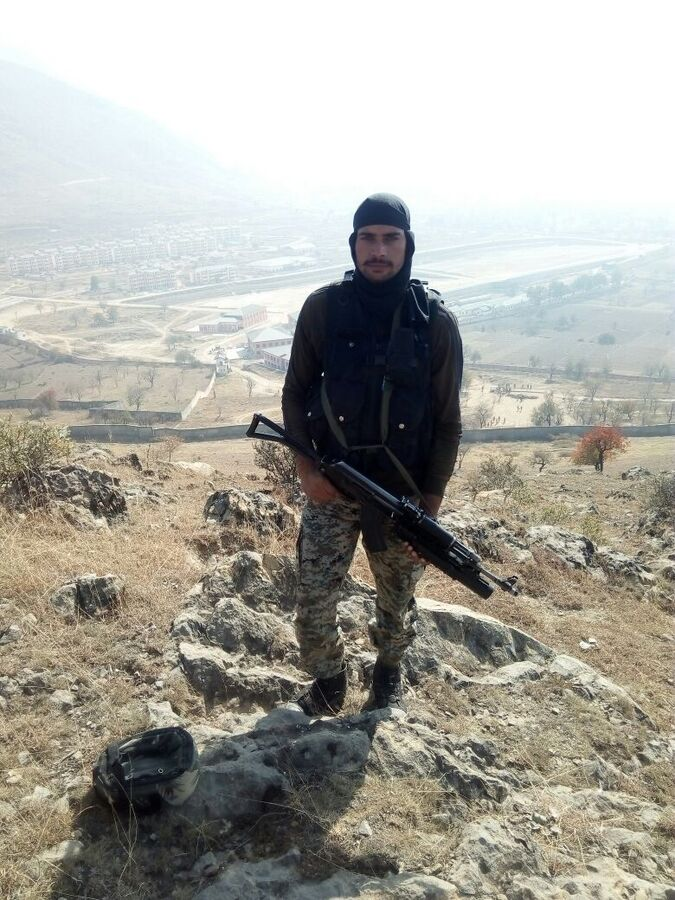
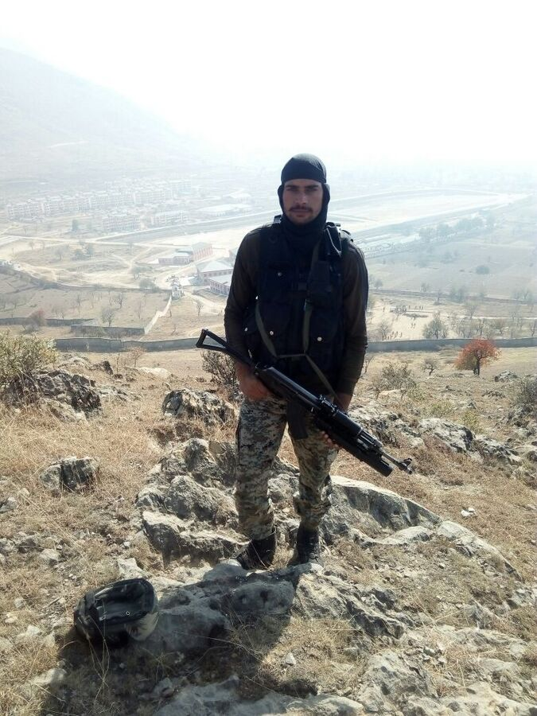
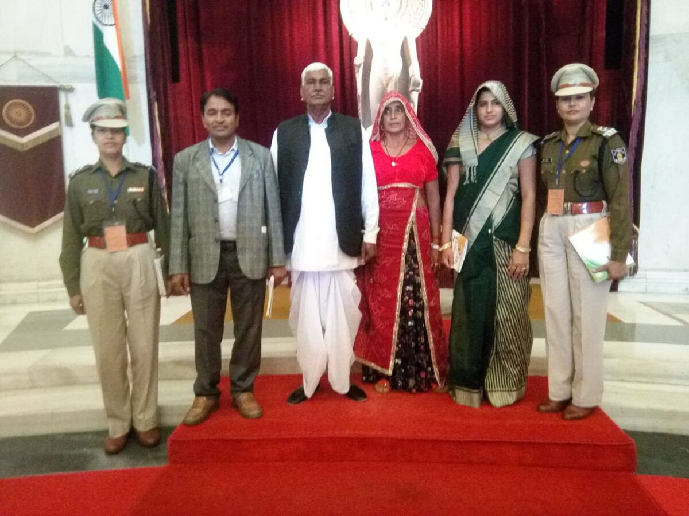
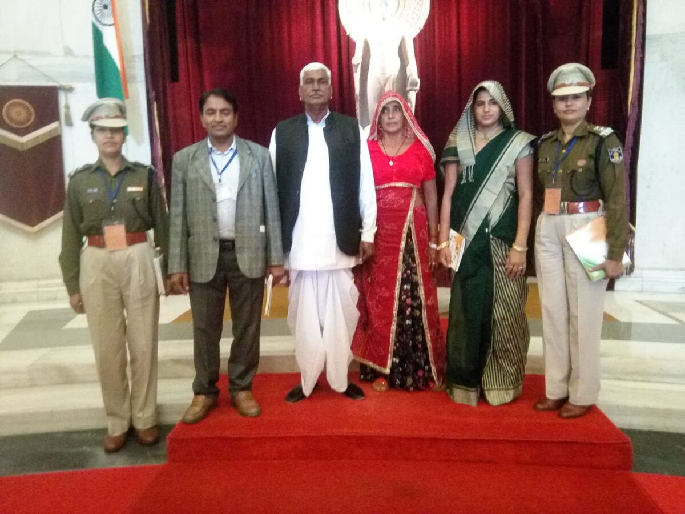
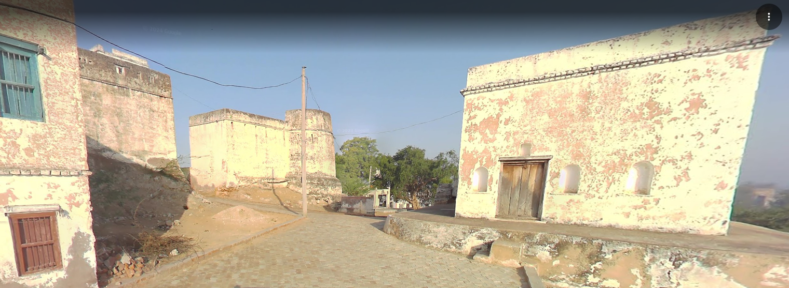
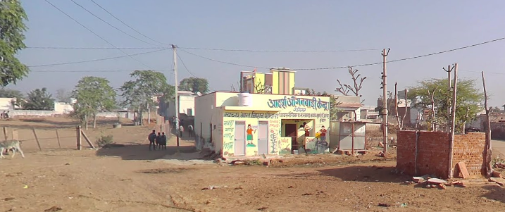
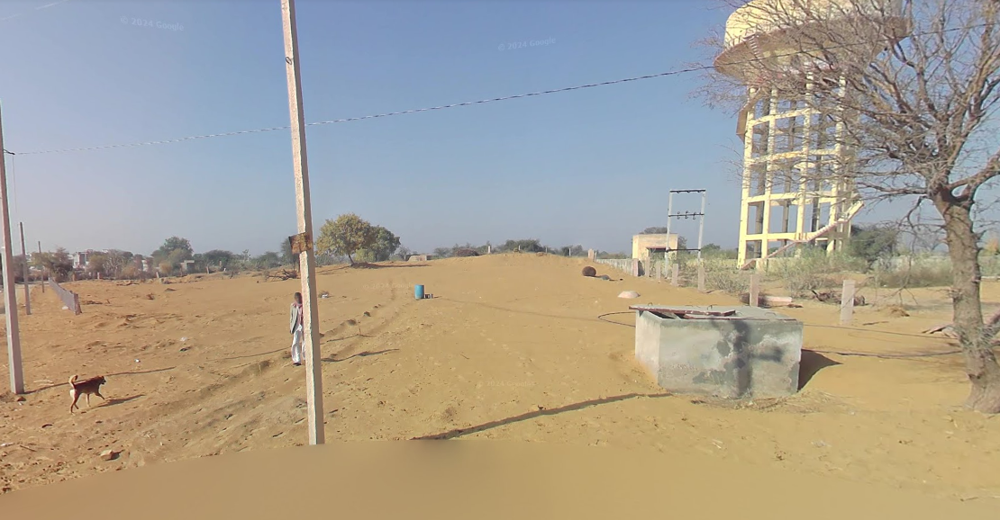
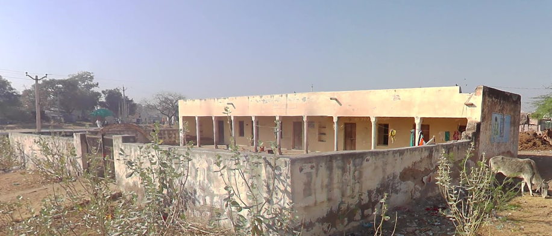

About Gorisar
Gorisar is a village located in Ratangarh tehsil of Churu district in Rajasthan, India. It is
situated
12km away from
sub-district headquarter Ratangarh (tehsildar office) and 36km away from
district
headquarter Churu. As per 2009
stats, Gorisar village is also a gram panchayat.
Gorisar has its own place in the vibrant Churu region. In the following sections, you’ll find
details
about population,
literacy, households, children, caste data, area, pincode, local
governance,
nearby
villages, connectivity, and
According to Census 2011, the location code or village code of Gorisar is 070591. The village
spans
a
total
geographical area of 2813.41 hectares, and the pincode of the locality is 331022.
Ratangarh is
nearest town to
Gorisar village for all major economic activities, which is approximately
12km
When it comes to local governance, Gorisar village is administered by a Sarpanch, the elected
head
of
the village, in
accordance with the Constitution of India and the Panchayati Raj Act. The
village falls
under the Ratangarh Vidhan
Sabha constituency for state-level representation and the Churu
Lok
Sabha
constituency for national parliamentary
elections. The local administration is responsible
for
civic
services and development within the village.
Population of Gorisar
Below is a concise population overview of Gorisar as per the Census 2011 data. The table
highlights the key
population metrics categorized by gender and social groups.
| sParticulars | Total | MALE | FEMALE |
|---|---|---|---|
| Total Population | 3,312 | 1,680 | 1,632 |
| Child Population (0–6 yrs) | 500 | 250 | 250 |
| Scheduled Castes (SC) | 550 | 281 | 269 |
| Scheduled Tribes (ST) | 9 | 4 | 5 |
| Literate Population | 1,768 | 1,076 | 692 |
| Illiterate Population | 1,544 | 604 | 940 |
Here's a detailed summary of the Basic Population Details of Gorisar village:
The total population of Gorisar village is around 3,312, including approximately 1,680 males
and 1,632
females, with a sex ratio of 971 females per 1,000 males. There are about 500 children aged 0–6 years in Gorisar village,
reflecting the young population
in the village. Gorisar village has 550 people belonging to the Scheduled Castes (SC) and 9 residents from
the Scheduled Tribes (ST).
The literacy rate of Gorisar village is about 53.38%, with male literacy at 64.05% and female
literacy at 42.40%.
There are around 548 households in Gorisar village.
Connectivity of Gorisar
Connectivity plays a major role in improving access, opportunities, and overall development of villages like
Gorisar. As per the 2011 stats, Gorisar had access to public bus service, private bus service and railway station.
| Connectivity Type | Status (in year 2011) |
|---|---|
| Public Bus Service | Available within village |
| Private Bus Service | Available within village |
| Railway Station | Available within 10+ km distance |
Nearby Villages of Gorisar
Knowing the nearby villages of Gorisar helps you understand the local area better. The following list of nearbyvillages gives a clear view of the villages around Gorisar.
| Talniya Ki Dhani | Sehla | Hanumanpura |
| Ratansara | Chak Jaleu | Jaleu Chhoti |
| Chak Ratangarh | Ladhasar | Chainpura |
| Gogasar | Golsar |
frequently Asked Questions about Gorisar
Where is Gorisar located?
Gorisar village is situated in Ratangarh Tehsil, within the Churu district of Rajasthan, India.
What is the gram panchayat of Gorisar?
Gorisar serves as its own Gram Panchayat (as per 2009 stats), overseeing its
local governance and development.
What is the pincode of Gorisar?
The pincode of Gorisar is 331022, which is used for postal services and delivery within the village.
What is the population of Gorisar as per the 2011 Census?
As per the 2011 Census, the population of Gorisar is 3,312, with 1,680 males and 1,632 females.
How many households are there in Gorisar as per the 2011 Census?
As per the 2011 Census, Gorisar village has a total of 548 households.
What is the literacy rate in Gorisar as per the 2011 Census?
According to the 2011 Census, the literacy rate in Gorisar is 53.38%. The male literacy rate is 64.05%,
while the female literacy rate is 42.40%.\
| -------Gorisar ---------- | ---------Village Overview-------- |
|---|---|
| Village (Hindi) : | Gorisar(गोरीसर) |
| Gram Panchayat : | Gorisar |
| Block / Tehsil : | Ratangarh |
| District : | Churu |
| State : | Rajasthan |
| Pincode : | 331022 |
| Area : | 2813.41 hectares |
| Sex Ratio (2011): | 971 |
| Population (2011): | 3,312 |
| Households : | 548 |
| Assembly Constituency : | Ratangarh |
| Parliament Constituency : | Churu |
| Nearest Town : | Ratangarh (12 km) |
| Villages in Gorisar Gram Panchayat | |
|---|---|
| Gorisar | Haripura |
| Khariya | Malpur |
Bus Stand
Government School

Pnb Bank

Saheed Smark

Facilties:
Seating Arrangement
Drinking water
Shop nearby(General Store)
Government school within 100 meters
Dharamshalas within walking distance
Rajendra Kumar Nain
Rajendra Nain (d.31.12.2017) was from Gorisar village in Ratangarh tehsil of Churu district in
Rajasthan. He became martyr of militancy on 31.12.2017 in a terrorist attack at Lethpora
CRPF
camp
in Awantipora of Pulwama district in J&K. He belonged to 130th battalion of the force
and
was part of
its elite Quick Reaction Team (QRT).
Early life
Joined Army
His deeds
On 30 December 2017 at around 0200 hrs, three heavily armed terrorists of JeM outfit sneaked
into
the campus by breaching the perimeter wall and entered the four-storeyed building of Type 2 and
Type 4 Quarters . On receipt of information about the attack, the Valley QAT(Quick Action Team)
from
Srinagar and Range QAT of South Kashmir Ops Range (SKOR) and Anantnag rushed for
Lethpora
camp.
It was decided to first evacuate the trapped personnel from Type 2 Quarters. Accordingly, Sh.
Zile
Singh, Assistant Commandant of Range QAT(SKOR) with his buddy Constable Rajendra Kumar
Nain,
moved the task. Amid the heavy firing, troops first rescued about ten personnel from
building, and
then advanced to engage the terrorists hiding somewhere in attic area.
As Constable Rajendra Kumar Nain reached for the attic door and opened it, the militant fired a
volley of bullets at the door and simultaneously lobbed a
grenade towards them. Saving him
from
this attack, Constable Rajendra Kumar, in a flash, without caring for his life, moved inside
with his BP shield and
fired a burst at the militant with full might. However, the militant
anticipating the tactical movement also fired back from behind the cemented block.
Resultantly, one Armour Piercing Incendiary (API) round pierced through the BP shield and hit
Rajendra Kumar Nain in the upper part of the chest. Due to
the hit, he lost control of the
BP
shield but valiantly continued to fire on the militant, till he fell unconscious and slumped on
the ground. In the process, he
inflicted grievous wounds on the militant. Shri Zile Singh,
who
was close to him, instantly reacted from the door and without caring for his life fired at
the
militant. Constable Rajendra Kumar Nain was evacuated to the hospital immediately where he
succumbed to his injuries and attained martyrdom. Incensed
by the loss of his buddy, Zile
Singh
charged on the militant with the covering fire from his fellow officer and neutralized on the
spot. The neutralized militant
was identified as Manzoor Ahmad Baba, r/o Drabgam, Pulwama.
Meanwhile, one militant was sighted near the perimeter of the camp. The valley QAT team was
directed engage the militant. Constable P.K. Panda and
Constable S. Prakash of valley QAT
were
in the front. As they closed in on the location, the militant greeted them with heavy volley of
fire. The militant was
hiding in the undulating open ground and firing continuously. No
effective cover was available to approach him without grave risk to life. Yet, Constable P.k
Panda along with his buddy Constable S. Prakash advanced through the open area adopting fire and
move tactics. As they closed in, the militant tried to
hurl grenades towards them. At this
juncture Constable P.K. Panda, without caring for his life, came out of his cover and fired at
the militant neutralizing him
on the spot. The killed militant was identified as Fardeen
Ahmad
Khandey r/o Tral, Pulwama.
After this, the valley QAT was tasked to clear the room from the ground floor and reach the top.
Constable P.K. Panda was again in the lead with his buddy
Constable S. Prakash. After
clearing
the ground and first two floors, P.K. Panda audaciously entered another room. The militant
hiding in the room fired
upon Constable P.K. Panda and inflicted injuries to him. Despite
being
injured P.K. Panda did not give up and continue to fire at the militant, till he fell down
but
not before inflicting serious wounds to the militant. Later he succumbed to his injuries and
attained martyrdom. The militant was neutralized
subsequently.
The Lethpora operation continued for more than 36 hours and was eventually repulsed successfully
by CRPF on its own. The success was largely
achieved by the tremendous grit, determination,
exemplary valour and never say die spirit of Constable Rajendra Kumar Nain, Constable P.K. Panda
and
Shri Zile Singh, Asst. Comdt. During the operation, Constable Rajendra Kumar Nain and P.K.
Panda attained martyrdom in the line of duty in keeping with
the highest traditions of the
Force. Constable Rajendra Kumar Nain and Constable P.K. Panda displayed exceptional and
conspicuous bravery, raw
courage, utmost dedication and commitment to duty in fighting with
terrorists and made supreme sacrifice for the nation.
Churu braveheart martyred in J&K terrorist attack
A pall of gloom descended on the native village of CRPF constable Rajendra Nain who was killed
in
a
terrorist attack at Lethpora CRPF camp on Sunday 31.12.2017. Nain was resident of
Gorisar village
in
Churu district. According to CRPF PRO Rajesh Yadav, Nain belonged to 130th battalion of the
force
and was part of its elite Quick Reaction Team (QRT). "He took a bullet to chest and was martyred.
His
body would be sent to his home town via New Delhi," Yadav said.
Rajendra Nain had joined CRPF in 2015 and since then had been posted at different areas. Churu
and
other regions of Shekhawati in the state boast of strong military tradition as many persons here
have served in the armed and paramilitary forces.
According to reports, five CRPF jawans were killed in the attack on the CRPF camp at Lethpora
in
Awantipora of Pulwama district in J&K. Two terrorists were also killed in retaliatory
action. The
officials
in Churu said that they were waiting for official confirmation after which they will
speak
to the family
and offer all possible help in organising the final rites of the braveheart.
जीवन परिचय
कॉंस्टेबल राजेन्द्र कुमार नैण (जाट) कीर्ति चक्र (मरणोपरांत) (4 सितंबर 1989 - 31 दिसंबर 2017)
वीरांगना - श्रीमती प्रियंका देवी
यूनिट - 130 बटालियन CRPF
लेथपोरा आतंकी हमला
राजेन्द्र कुमार नैण का जन्म 4 सितम्बर 1989 को चौधरी सहीराम जी नैण की चौथी संतान के रूप में चूरू जिले की
रतनगढ़ तहसील के गांव गौरीसर में हुआ। पांच भाई-बहनों में राजेन्द्र कुमार से छोटी एक बहन है।
राजेन्द्र कुमार का विवाह फतेहपुर तहसील के गांव चुवास की प्रियंका के साथ हुआ जिनकी एकमात्र संतान बेटी
मिष्ठी है।
राजेन्द्र कुमार नैण 3 जनवरी 2013 को कॉंस्टेबल के पद पर CRPF में भर्ती हुए और 130 वीं बटालियन में जम्मू
कश्मीर में तैनात थे।
राजेन्द्र कुमार CRPF की QUICK ACTION TEAM में शामिल थे, जिसमें 8 से 10 चुनिंदा जांबाज़ शामिल होते हैं।
31 दिसम्बर 2017 को देर रात श्रीनगर के पुलवामा के पास स्थित लेथपोरा में CRPF की 185 वीं बटालियन के शिविर
पर जैश ऐ मोहम्मद के आतंकियों ने हमला किआ। QAT में शामिल राजेन्द्र कुमार टीम के साथ 4 मंजिला बिल्डिंग में
घुसे और 10 जवानों को सुरक्षित कर लिया, 2 फिदायीन आतंकियों को मार गिराया गया। इस बीच तीसरे की तलाश में
ज्योंही QAT आगे बढ़कर एक कमरे में घुसने लगी, इसी दौरान अंदर छिपे हुए तीसरे आतंकी ने ब्रस्ट फायर कर दिया,
जिसमें बूलेट प्रूफ शील्ड को छेदते हुए एक गोली राजेंद्र कुमार के सीने के ऊपरी हिस्से में लगी और वह गम्भीर
रूप से घायल हो गए, राजेन्द्र कुमार जबतक अचेत नहीं हुए तबतक फायर करते रहे और हॉस्पिटल ले जाने पर वीरगति
को प्राप्त हुए। अंततः तीसरे आतंकी को भी मार गिराया गया। 36 घण्टे तक चले इस ऑपरेशन में CRPF के 5 जवान
बलिदान हुए।
राजेन्द्र कुमार के अदम्य साहस, वीरता और बलिदान का सम्मान करते हुए भारत सरकार ने 26 जनवरी 2019 को उन्हें
शांतिकाल के दूसरे सर्वोच्च वीरता सम्मान कीर्ति चक्र से अलंकृत किया।
शहीद राजेन्द्र नैण श्रद्धांजलि द्वादस
अमर शहीद राजेन्द्र नैण
हाथ तो जोड़ते हैं
सिर्फ भारत-माता के सामने
वरना हम तो भारतीय सैनिक हैं
जो मौत को भी घुंघरू पहनाकर
मुजरा करवाते हैं ।
उपर्युक्त वाट्सएप संदेश अमर शहीद राजेन्द्र नैण,आयु-26 वर्ष (ग्राम -गौरीसर जिला -चूरू ,राजस्थान )ने अपने
साथियों को 31 दिसंबर, 2017 की सुबह भेजा ।उसी रात्रि को ही जम्मू -कश्मीर के पुलवामा में सीआरपीएफ के शिविर
पर हुए आतंकी हमले में बहादुरी से लड़ते हुए नैन शहीद हो गए । किसे पता था कि उनका साल के अंतिम दिन साथियों
को भेजा संदेश अंतिम होगा । राजेंद्र का शाब्दिक अर्थ 'राजाओं का राजा 'होता है ।आज राजेंद्र हमारे देश पर
राज करने वालों के दिलों का राजा अर्थात राजाओं का राजा है ।हमारे राजेंद्र ने राजाओं का राजा बन 'यथा नाम
तथा गुण' की उक्ति को चरितार्थ किया है।धन्य हैं उनके माता-पिता ,धन्य है वह धरती जहां ऐसे सिंह -सपूत पैदा
हुए ।
शहीद राजेन्द्र नैण श्रद्धांजलि द्वादस
सुत सहीराम -सावित्री ,गौरीसर परिवार ।
दादी -नानी लोरियां, देशभक्ति संस्कार ।।1ll
तात-मात गुण बहादुर, राजेन्द्र जन्मजात ।
भगत भगतसिंह कहते, बालगोठिया बात ।।2ll
दुख सदा सहते सैनिक ,हमें सदा सुखदैण ।
आह भरी न मौत समुख ,वाह राजेंद्र नैण ।।3 ll
पत्नी प्रियंका प्रियवर,'मिष्ठी' की मुस्कान ।
राजेंद्र नैण शहीद हैं, भारत- मां की शान ।।4 ll
हम रहें न रहें लेकिन ,देश में रहे चैन।
देय दुआ शहीद हुआ, वीर राजेंद्र नैण।।5 ll
भारत अनुगुंजित अमर ,अंत समय के बैण।
मौत से मुजरा करवा ,गए राजेंद्र नैण ।।6 ll
नन्ही मिष्ठी मुखाग्नि जब ,पिता राजेन्द्र नैण ।
छाया चहुंओर तमस, हुई दुपहरी रैण ।।7 ll
भारत- भूमि धाक बड़ी,अमर कीर्ति आकाश ।
राजेन्द्र नैण सूरमा ,सूरज -चंदा पास ।।8 ll
राजेन्द्र अब रहे नहीं, सिर्फ स्मृति रही शेष ।
प्रेरणास्पद शहीद के,देश पढे़ संदेश ।।9 ll
सुनती राजेन्द्र सरहद,दहाड़ पहाड़ -सिंध ।
कहानी -जवानी अमर, जोश-होश जयहिन्द ।।10 ll
नाक देकर नाक रखी,सिर देकर सिरताज ।
भारत जन-गण-मन ह्रदय,इन्द्र राजेन्द्र आज ।।11 ll
कर लेखनी छूट गई, शब्द शेष कछु कैण ।
'रामप्रकाश ' नमन करता ,अब 'नैण' भरे नैण ।।12 ll
---रामप्रकाश नैण गौरीसर ।

 

 



Chopal
यदि आप गॉरिसर गाँव की जानकारी जानना चाहते हैं:
गॉरिसर चुरू जिले का एक गाँव है.
यह रतनगढ़ तहसील में आता है.
इसका पिन कोड 331022 है.
यदि आप "चौपाल" नामक किसी विशेष स्थान या इमारत की जानकारी जानना चाहते हैं:
परंपरागत चौपाल: जैसा कि ऊपर बताया गया है, चौपाल गाँवों में एक सामुदायिक केंद्र होता है, जहाँ
ग्रामीण एकत्र होकर विभिन्न सामुदायिक, धार्मिक और सामूहिक उद्देश्यों के लिए इसका उपयोग करते हैं.
सरकारी "जन चौपाल" या "रात्रि चौपाल": ये सरकार द्वारा आयोजित किए जाते हैं, जहाँ जिला कलेक्टर और
अन्य अधिकारी ग्रामीणों की समस्याओं को सुनते हैं और सरकारी योजनाओं की जानकारी देते हैं.
ई-चौपाल: यह आईटीसी लिमिटेड की एक पहल है, जो किसानों को इंटरनेट के माध्यम से सीधे बाजारों से
जोड़ती है.
Sati Dadi Mandir
गोरिसर, राजस्थान में सती दादी के बारे में जानकारी:
गोरिसर में रानी सती दादी का एक प्रसिद्ध मंदिर स्थित है. रानी सती दादी, जिन्हें नारायणी देवी के
नाम से भी जाना जाता है, एक राजस्थानी महिला थीं जो 13वीं और 17वीं शताब्दी के बीच रहीं और अपने पति
की मृत्यु पर सती (आत्मदाह) हो गईं.
इतिहास और किंवदंती:
रानी सती दादी की कहानी महाभारत काल से जुड़ी है. लोककथाओं के अनुसार, द्वापर युग में
रानी सती को अभिमन्यु की पत्नी उत्तरा माना जाता है. उत्तरा ने अभिमन्यु की चिता के साथ आत्मदाह
करने का निश्चय किया, लेकिन भगवान कृष्ण ने उन्हें रोका और कहा कि उनकी इच्छा अगले जन्म में पूरी
होगी. अगले जन्म में, वह राजस्थान के डोकवा गांव में गुरसमल बिरमेवाल की बेटी के रूप में जन्मीं और
उनका नाम नारायणी रखा गया. अभिमन्यु का जन्म हिसार में जलीराम जालान के पुत्र के रूप में हुआ और
उनका नाम टंडन जालान रखा गया. टंडन और नारायणी का विवाह हुआ और वे शांतिपूर्ण जीवन जी रहे थे.
राजा के बेटे ने टंडन से उसकी कीमती घोड़ी छीनने की कोशिश की, जिससे टंडन और राजा के बेटे के बीच
द्वंद्व हुआ. टंडन ने राजा के बेटे को मार डाला, और राजा ने टंडन को नारायणी के सामने युद्ध में मार
डाला. नारायणी, स्त्री साहस और शक्ति का प्रतीक, राजा से लड़ी और उसे मार डाला. फिर, उन्होंने अपने
पति की चिता पर स्वयं को अग्नि को समर्पित कर दिया, जिसे सती कहा जाता है.
मंदिर और पूजा:
रानी सती मंदिर भारत के सबसे बड़े मंदिरों में से एक है जो रानी सती को समर्पित है.
मंदिर में किसी देवी या देवता की मूर्ति या तस्वीर नहीं है, बल्कि शक्ति और बल को दर्शाने वाले
त्रिशूल की पूजा की जाती है.
माना जाता है कि यह मंदिर 400 वर्ष से अधिक पुराना है.
भादों अमावस्या के अवसर पर मंदिर में विशेष पूजानोत्सव का आयोजन किया जाता है.
महिला भक्त, विशेष रूप से राजस्थान और मारवाड़ी समुदायों की, अपने परिवारों के लिए आशीर्वाद लेने के
लिए नियमित रूप से मंदिर जाती हैं.
वे अपने पतियों के स्वास्थ्य और लंबी आयु, अपने बच्चों की सुरक्षा और अपने घरों में सद्भाव के लिए
प्रार्थना करती हैं.
वे रानी सती दादी चालीसा और देवी को समर्पित अन्य भजन भी गाती हैं.
मंदिर में सुबह 5:00 बजे से दोपहर 1:00 बजे तक और शाम 4:00 बजे से रात 10:00 बजे तक खुला रहता है.
विवाद:
सती पूजा की प्रथा को भारत में अक्सर विवाद का विषय रहा है.
1987 में रूप कंवर की घटना के बाद, भारतीय सरकार ने 'सती के महिमामंडन' पर प्रतिबंध लगाने का आदेश
जारी किया और वार्षिक मेले पर प्रतिबंध लगाने की कोशिश की.
कलकत्ता उच्च न्यायालय ने प्रतिबंध हटा लिया, और अपील पर, भारत के सर्वोच्च न्यायालय ने मंदिर के
भीतर रानी सती की पूजा की अनुमति देने के लिए इसे संशोधित किया, जबकि चुनरी समारोहों के माध्यम से
उनकी सती के उत्सव पर रोक लगा दी.
आज:
मंदिर एक बहुमंजिला संरचना, संगमरमर से बना एक मुख्य हॉल और दो आंगनों वाला एक स्मारकीय परिसर है जो
300 तीर्थयात्रियों को रख सकता है.
रानी सती को त्रिशूल द्वारा दर्शाया गया है, और उन्हें देवी शक्ति का एक रूप माना जाता है.
पवित्र स्थान में, गणेश, शिव और दुर्गा से घिरी रानी सती का चित्रण है, जबकि एक दीवार भित्ति उनके
पति की मृत्यु, उनके आत्मदाह और मंदिर के बाद के निर्माण की घटनाओं को बताती है.
यह ध्यान रखना महत्वपूर्ण है कि सती प्रथा भारत में अवैध है, और रानी सती दादी का मंदिर अब महिला
बहादुरी और भक्ति के प्रतीक के रूप में पूजा जाता है.

Hariram ji Mandir
यह भी माना जाता है कि बाबा हरिराम जी का जन्म नागौर ज़िले के झोरड़ा गांव में हुआ था. यह गांव नागौर से लगभग 30 किलोमीटर उत्तर में स्थित है. यहां हरिराम जी महाराज मंदिर के बारे में कुछ अतिरिक्त जानकारी दी गई है: जन्मतिथि और परलोक गमन: बाबा हरिराम का जन्म विक्रम संवत 1959 में हुआ था और उनका देहांत विक्रम संवत 2000 में हुआ था. जन्म स्थान: झोरड़ा गांव, नागौर ज़िला, राजस्थान. जाति: दायमा ब्राह्मण परिवार में जन्मे. ब्रह्मचारी: बाबा हरिराम जीवन भर ब्रह्मचारी रहे. लोकमान्यता: उन्हें 'सांपों का देवता' माना जाता है. ऐसा माना जाता है कि बाबा हरिराम झाड़ा लगाकर सांप और बिच्छू के डंक से जहर उतार देते थे. मेला: हर साल भाद्रपद की चतुर्थी और पंचमी को झोरड़ा गांव में मेला लगता है, जिसमें राजस्थान, उत्तर प्रदेश, हरियाणा, दिल्ली और पंजाब से लगभग डेढ़ लाख लोग आते हैं. इसके अलावा, चूरू जिले के सरदारशहर में भी एक श्री हरिराम जी मंदिर स्थित है.

Panchayat
गौरिसर राजस्थान के चुरू जिले की रतनगढ़ पंचायत समिति में एक ग्राम पंचायत है. गौरिसर के बारे में महत्वपूर्ण जानकारी: स्थानीय प्रशासन: यह एक ग्राम पंचायत है, जो गाँव या गाँवों के समूह के लिए एक बुनियादी शासी संस्था के रूप में कार्य करती है. सरपंच: सुमन गौरिसर ग्राम पंचायत की वर्तमान सरपंच हैं. विकास परियोजनाएं: गौरिसर IWMP (एकीकृत वाटरशेड प्रबंधन कार्यक्रम) के तहत एक विकास परियोजना से जुड़ा है, जिसका उद्देश्य जल संरक्षण और ग्रामीण विकास से संबंधित कार्यों पर ध्यान केंद्रित करना है. आजीविका और सामाजिक सेवाएं: रिसर्चगेट के एक अध्ययन के अनुसार, गौरिसर में आजीविका के स्रोतों में कृषि और पत्थर के काम शामिल हैं. ग्राम पंचायत में 4 आंगनवाड़ी केंद्र और एक स्वास्थ्य उप-केंद्र भी है. विकास योजनाओं में भागीदारी: ग्राम पंचायतें गरीबी उन्मूलन में महत्वपूर्ण भूमिका निभाती हैं. यह सामाजिक सेवाओं की गुणवत्ता में सुधार और वंचितों के लिए देखभाल और सुरक्षा हेतु दिशानिर्देश तैयार करने में सहायता करती हैं. जल आपूर्ति: गौरिसर के घरों में पाइपलाइन से पानी नहीं है, और पानी आमतौर पर सामुदायिक जल नल और सार्वजनिक हैंडपंपों के माध्यम से मिलता है. स्वयं सहायता समूह: ग्राम पंचायत क्षेत्र में 7 स्वयं सहायता समूह हैं, जिनमें से 3 आंगनवाड़ी केंद्रों के लिए भोजन बनाते हैं. पंचायती राज व्यवस्था भारत में स्थानीय स्वशासन की सबसे पुरानी प्रणालियों में से एक है और इसका ऐतिहासिक उल्लेख लगभग 250 ईस्वी पूर्व का है. पंचायती राज मंत्रालय स्थानीय शासन की प्रक्रिया की देखरेख करता है और यह सुनिश्चित करता है कि सरकार की शक्तियाँ और कार्य स्थानीय स्वशासी निकायों तक पहुँचें.
Cooperative
सहकारी समिति एक ऐसा संगठन है जिसका स्वामित्व और नियंत्रण लोकतांत्रिक रूप से उसके सदस्यों के पास होता है, ताकि वे अपनी साझा आर्थिक, सामाजिक और सांस्कृतिक ज़रूरतों और आकांक्षाओं को पूरा कर सकें. मुख्य विशेषताएँ स्वैच्छिक और खुली सदस्यता: कोई भी व्यक्ति जो सहकारी समिति के उद्देश्य से सहमत है, उसकी सदस्यता ग्रहण कर सकता है, ncba clusa के अनुसार. लोकतांत्रिक सदस्य नियंत्रण: सदस्य निर्णय लेने की प्रक्रिया में भाग लेते हैं, और प्रत्येक सदस्य का समान मत होता है. सदस्यों की आर्थिक भागीदारी: सदस्य सहकारी समिति की पूंजी में योगदान करते हैं, और उसका लाभ सदस्यों को वितरित किया जाता है. स्वायत्तता और स्वतंत्रता: सहकारी समितियाँ स्वतंत्र रूप से कार्य करती हैं और बाहरी नियंत्रण से मुक्त रहती हैं. शिक्षा, प्रशिक्षण और सूचना: सदस्यों को सहकारी समितियों के बारे में शिक्षित किया जाता है, ताकि वे प्रभावी ढंग से भाग ले सकें. सहकारी समितियों के बीच सहयोग: सहकारी समितियाँ एक-दूसरे का सहयोग करती हैं, जिससे उनकी सामूहिक शक्ति बढ़ती है. समुदाय के प्रति चिंता: सहकारी समितियाँ अपने समुदाय के विकास और बेहतरी के लिए भी काम करती हैं. सहकारी समितियों के प्रकार उपभोक्ता सहकारी समितियाँ: ये सदस्यों को उचित मूल्य पर वस्तुएँ और सेवाएँ प्रदान करती हैं. उत्पादक सहकारी समितियाँ: ये उत्पादकों को उत्पादन और विपणन में सहायता करती हैं. विपणन सहकारी समितियाँ: ये किसानों या छोटे उत्पादकों को अपने उत्पादों के लिए बेहतर बाज़ार खोजने में मदद करती हैं. कृषक सहकारी समितियाँ: ये किसानों को ऋण, बीज, खाद और अन्य कृषि-संबंधित सुविधाएँ प्रदान करती हैं. ऋण सहकारी समितियाँ: ये सदस्यों को सस्ती दरों पर ऋण प्रदान करती हैं. सहकारी आवास समितियाँ: ये सदस्यों को सस्ती दरों पर आवास उपलब्ध कराती हैं. भारत में सहकारी समितियों का विकास भारत में सहकारी समितियों का एक लंबा इतिहास रहा है, karma.law.en2hi.search.translate.goog के अनुसार. 1912 में सहकारी समिति अधिनियम पारित किया गया, जिसने सहकारी समितियों के गठन को बढ़ावा दिया. राजस्थान में भी सहकारी आंदोलन की शुरुआत 1904 में हुई थी. लाभ कम कीमतें: सदस्यों को कम कीमतों पर वस्तुएँ और सेवाएँ मिलती हैं. बढ़ी हुई क्रय शक्ति: सदस्य बेहतर क्रय शक्ति का लाभ उठा सकते हैं. लाभ का समान वितरण: लाभ सदस्यों को वितरित किया जाता है. स्व-सहायता और पारस्परिक सहायता: सदस्य एक-दूसरे की सहायता करते हैं. स्थायी अस्तित्व: सहकारी समितियों का अस्तित्व आमतौर पर स्थायी होता है. चुनौतियाँ निर्णय लेने में देरी: सदस्यों की भागीदारी के कारण निर्णय लेने में लंबा समय लग सकता है. सदस्यों के बीच संघर्ष: सदस्यों के बीच मतभेद हो सकते हैं. लाभ प्रोत्साहन की कमी: लाभ प्रोत्साहन के बिना लोग उतनी मेहनत नहीं कर सकते. पूंजी जुटाने में कठिनाई: बाहरी निवेशकों को आकर्षित करने में कठिनाई हो सकती है. सहकारी समितियाँ समाज के कमजोर वर्गों के लिए एक महत्वपूर्ण भूमिका निभाती हैं और उनके हितों की रक्षा करती हैं.
Thakur ji Mandir
अगर आप गोरिसर के ठाकुर जी मंदिर के बारे में जानकारी चाहते हैं, तो यह राजस्थान के चूरू जिले में स्थित है. यह मंदिर हिंदू भगवान ठाकुर जी (भगवान कृष्ण का एक रूप) को समर्पित है. यहां कुछ जानकारी दी गई है जो आपको Gorisar के ठाकुर जी मंदिर के बारे में मिल सकती है: पता: 4MXG+599, Gorisar, Rajasthan 331022, भारत. यह मंदिर भगवान कृष्ण के प्रति समर्पण के लिए महत्वपूर्ण माना जाता है. हालांकि, Gorisar में ठाकुर जी मंदिर के इतिहास, वास्तुकला और त्योहारों से संबंधित विशिष्ट विवरण अभी उपलब्ध नहीं हैं। उपलब्ध जानकारी से यह स्पष्ट नहीं हो रहा है कि यह मंदिर किसी विशेष उत्सव या आयोजन के लिए प्रसिद्ध है

Goga ji Mandir
गोरिसर में गोगा जी के दो मंदिर स्थित हैं: गोगा जी मंदिर, कांगड़: यह गोरिसर, राजस्थान के पास स्थित है. गोगामेड़ी काली माता मंदिर, भगतजी महाराज की मेड़ी: यह बीरमसर, गोरिसर, राजस्थान में स्थित है. दोनों ही मंदिर गोगा जी के भक्तों के लिए महत्वपूर्ण स्थान रखते हैं. यह ध्यान रखना महत्वपूर्ण है कि गोगा जी का मुख्य समाधि स्थल, जिसे धुरमेड़ी के नाम से जाना जाता है, हनुमानगढ़ जिले के गोगामेड़ी में स्थित है, जो भादरा से लगभग 15 किमी उत्तर-पश्चिम में है. गोगामेड़ी में प्रतिवर्ष भाद्रपद कृष्ण पक्ष की नवमी को एक विशाल मेला भरता है. यह मेला राजस्थान, हरियाणा, उत्तर प्रदेश, उत्तराखंड, बिहार से लाखों श्रद्धालुओं को आकर्षित करता है, जो गोगा जी की पूजा करने आते हैं.

fort Gorisar

Pasu hospital
गोरिसर में कई पशु अस्पताल उपलब्ध हैं, जो विभिन्न प्रकार की सुविधाएं प्रदान करते हैं। यहां कुछ प्रमुख अस्पतालों की जानकारी दी गई है: गौ चिकित्सालय पता: 3JRC+68F, रतनगढ़, राजस्थान 331022. रेटिंग: 4.7 (18 उपयोगकर्ता रेटिंग के आधार पर). यहां गायों के लिए बेहतर सेवाएं और एक अच्छा पार्क भी है. राजकीय प्रथम श्रेणी पशु चिकित्सालय पता: 3JJG+5W8, रतनगढ़, राजस्थान 331022. खुलने का समय: गुरुवार: सुबह 10 बजे से शाम 5 बजे तक. शुक्रवार: सुबह 10 बजे से शाम 5 बजे तक. शनिवार: सुबह 10 बजे से शाम 5 बजे तक. रविवार: बंद. सोमवार: सुबह 10 बजे से शाम 5 बजे तक. मंगलवार: सुबह 10 बजे से शाम 5 बजे तक. बुधवार: सुबह 10 बजे से शाम 5 बजे तक.
Private School
Aanganbadi
आंगनवाड़ी का अर्थ है "आँगन आश्रय". यह भारत सरकार द्वारा 1975 में शुरू किया गया एक ग्रामीण बाल देखभाल केंद्र है. यह बच्चों की भूख और कुपोषण से निपटने के लिए एकीकृत बाल विकास सेवा (ICDS) कार्यक्रम का एक हिस्सा है. राजस्थान में ICDS निदेशालय ने आंगनवाड़ी केंद्रों को हर गाँव में महिलाओं और बच्चों के लिए पहला गाँव केंद्र स्थापित करने में सफलता प्राप्त की है. यह 2 अक्टूबर 1975 को बांसवाड़ा की गढ़ी पंचायत समिति से शुरू हुआ. वर्तमान में राजस्थान में 304 परियोजनाओं के तहत 62,020 आंगनवाड़ी केंद्र संचालित हैं, rajasthan Gov के अनुसार. आंगनवाड़ी केंद्रों द्वारा दी जाने वाली सेवाएं आंगनवाड़ी केंद्र पात्र लाभार्थियों (0-6 वर्ष के बच्चे, गर्भवती महिलाएं और स्तनपान कराने वाली माताएं) को छह सेवाओं का एक पैकेज प्रदान करते हैं: पूरक पोषण: बच्चों और गर्भवती/स्तनपान कराने वाली महिलाओं को पौष्टिक भोजन प्रदान करना. प्री-स्कूल अनौपचारिक शिक्षा: प्रारंभिक बचपन की शिक्षा और सीखने की गतिविधियां प्रदान करना. पोषण और स्वास्थ्य शिक्षा: माताओं को पोषण और स्वास्थ्य संबंधी जरूरतों के बारे में शिक्षित करना. टीकाकरण: बच्चों और गर्भवती महिलाओं का टीकाकरण. स्वास्थ्य जांच: बच्चों और माताओं के स्वास्थ्य और विकास की निगरानी के लिए नियमित जांच. रेफरल सेवाएं: गंभीर मामलों को अस्पतालों या विशिष्ट स्वास्थ्य केंद्रों में भेजना. ध्यान दें: टीकाकरण, स्वास्थ्य जांच और रेफरल सेवाएं राष्ट्रीय स्वास्थ्य मिशन और सार्वजनिक स्वास्थ्य अवसंरचना के माध्यम से प्रदान की जाती हैं. आंगनवाड़ी केंद्रों के उद्देश्य 0 से 6 वर्ष की आयु के बच्चों के पोषण और स्वास्थ्य की स्थिति में सुधार सुनिश्चित करना. बच्चों के उचित मनोवैज्ञानिक, शारीरिक और सामाजिक विकास के लिए आधार तैयार करना. मृत्यु दर, रुग्णता, कुपोषण और स्कूल छोड़ने वाले बच्चों की दर को कम करना. बाल विकास को बढ़ावा देने के उद्देश्य से विभिन्न विभागों के बीच नीति और कार्यान्वयन के माध्यम से प्रभावी समन्वय सुनिश्चित करना. पोषण और स्वास्थ्य शिक्षा के माध्यम से बच्चों की सामान्य स्वास्थ्य और पोषण संबंधी आवश्यकताओं का ध्यान रखने की माँ की क्षमता को बढ़ाना.
Gosala
गौशालाएँ भारत में गायों, बछड़ों और बैलों के लिए बने हुए आश्रय स्थल हैं. इन्हें गौवंश के कल्याण, आश्रय, सुरक्षा और पुनर्वास के लिए स्थापित किया जाता है. गौशाला का उद्देश्य गायों का संरक्षण और देखभाल: गौशालाओं का मुख्य उद्देश्य गायों, विशेषकर बूढ़ी, बीमार या परित्यक्त गायों की देखभाल, सुरक्षा और आश्रय प्रदान करना है. गौ-उत्पादों का उपयोग: गौशालाएँ गौ-मूत्र और गोबर जैसे गौ-उत्पादों की बढ़ती माँग को पूरा करने के लिए कच्चे माल का स्रोत उपलब्ध कराती हैं, जिनका उपयोग वैकल्पिक चिकित्सा, कृषि और सौंदर्य प्रसाधन में किया जाता है. संस्कृति और विरासत का संरक्षण: गौशालाएँ भारतीय परंपरा में धार्मिक आस्था और सांस्कृतिक विरासत का भी महत्वपूर्ण अंग हैं, Wikipedia के अनुसार. हिंदू धर्म में गायों को पवित्र माना जाता है और उन्हें धन, शक्ति और मातृ प्रेम का प्रतीक मानकर उनकी पूजा की जाती है. गौशाला की आवश्यकता गायों को सुरक्षा: गौशालाएँ जीवन के अंतिम समय में गायों के प्रति होने वाली क्रूरता को रोकने में मदद करती हैं और उनके लिए सम्मानजनक जीवन-यापन सुनिश्चित करती हैं. आर्थिक लाभ: गौशालाएँ दूध, गोबर और मूत्र की बिक्री से आय अर्जित करती हैं. सामाजिक लाभ: गौशालाएँ समाज को गौमाता की सेवा करने और गौसेवा के महत्व को समझने का मंच भी प्रदान करती हैं. गौशाला में गायों की देखभाल आहार और पानी: गायों को संतुलित आहार, जैसे कि भूसा, हरा चारा, सेंधा नमक और गुड़ दिया जाता है, Kanha Gaushala, Uttar Pradesh के अनुसार. उन्हें स्वच्छ पेयजल भी उपलब्ध कराया जाता है. चिकित्सा: गौवंश का नियमित रूप से स्वास्थ्य परीक्षण, चिकित्सा, कृमिनाशक, दवापान और टीकाकरण किया जाता है. बीमार गायों के लिए अलग तबेला बनाया जाता है. स्वच्छता: गायों को रोजाना नहलाया जाता है, खासकर गर्मियों में, ABP News के अनुसार. खुली जगह: गौशालाओं में गायों को घूमने और चरने के लिए पर्याप्त खुली जगह दी जाती है.
Dharamshala
